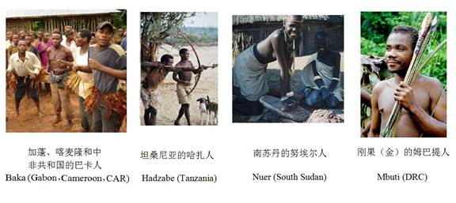
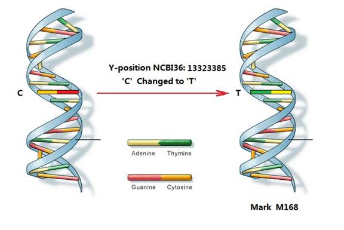
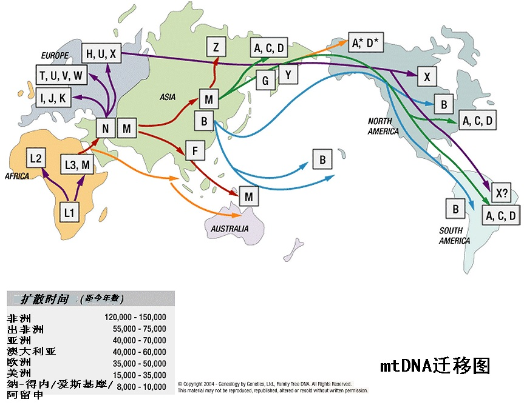

|
三. 从DNA解码中看到的现代人迁徙和分布
1. 基因地理工程
2005年的“基因地理工程”
（Genographic Project）的研究项目，征集了10万个来自各民族的DNA样本，测试他们的Y染色体和线粒体中的遗传标记，建立了一个人类共同的遗传标记信息库，并建全了人类的“父系树谱”和“母系树谱”，从而提炼出了全人类的家族历史、迁徙历史和分布图。
“基因地理工程” （Genographic Project），并不是有关“基因”（Gene）与“地理”（Geography）的工程。因为它的目的不在于研究人类“基因”的地理分布，而仅仅是研究有关男性和女性承传的谱系信息分布地理的工程。男性承传的谱系信息来自Y染色体中的遗传标记，女性承传的谱系信息来自线粒体中的遗传标记，“基因地理工程”准确的名称应该是“遗传标记地理工程”。
除了最初征求的 10万名参与者之外，“基因地理工程”还向公众开放。超过 39万 人通过购买工具包加入到这个工程中，他们分别提交了一份 DNA 样本以供分析，用于发现他们自己的基因血统，其结果以在线方式匿名发布。有了这些数据和其它机构提供的百万份以上的样本数据，才使得我们对隐藏在我们自己血液中的历史有了一个明确的认识。
2.非洲之外的现代人
在前面几节中，重点在讲述人类的父系树谱和母系树谱，那些是关于人类血统的表述。在本节和后面两节中，将讲述人类血统在世界地理上的分布。
“基因地理工程”的成果进一步确定了上述团队的研究成果，十万和后来的几十万Y染色体样本的采集和分析，确认和丰富了他们建立的Y染色体父系树。加上线粒体DNA遗传标记的分析，不但确定了全世界的人，都有一个共同的父系祖先和母系祖先，而且，在他们之下，也只是寥寥少数几个先祖的后裔延续到现在。特别另人惊讶的是，在非洲之外的全部现代人，男人都有一个共同的男性遗传标记M168，男性和女性都有一个共同的女性遗传标记L3。这意味着很久以前，因为突变，在一位男子的身上，产生了M168标记，这个首位带M168标记的男子，就是非洲以外所有现代人的男性祖先。同样，有一位首先携带L3标记的女子，她是非洲以外所有现代人的女性祖先。虽然他们不大可能是同一时代的夫妻，但并不影响他们是非洲以外60亿现代人的共同祖先。 在他们之后，有着众多的分支，也有了你和我。（第2节：参看人类的父系树图和人类的母系树图）
3. 留在非洲故乡的亲人
在人类故乡非洲，现代人身上的标记就没有像非洲以外的现代人那样简单了。“基因地理工程”在非洲收集的DNA标本中，含有M168和L3的人是少数的。更多人的样本中不含M168和L3标记，却有其它的一些标记，而这些标记又是非洲以外的人们所没有的。
在男性Y染色体标记上，非洲人身上主要是M60和M91两大类。
在非洲各种族部落和国家中，含有M60标记人群比例较大的国家是：
加蓬、喀麦隆和中非共和国的巴卡人（Baka）：63%-72%；
坦桑尼亚的哈扎人（Hadzabe）: 52%-60%；
南苏丹的努埃尔人（Nuer）：50%。
刚果（金）的姆巴提人（Mbuti）：33%-60%。
[Baka
63%-72% (Gabon ，Cameroon，CAR)， Hadzabe (Tanzania) 52%-60%,
Nuer (South Sudan) 50%，Mbuti (DRC) 33%-60%]。

图5-9：非洲含有Y染色体标记M60的族群照片
在非洲各种族部落和国家中，含有M91标记人群比例较大的国家是：
纳米比亚的闪族人：66％ 纳米比亚的那抹人：64％
Tsumkwe San (Namibia) 66% Nama
(Namibia) 64%
苏丹的丁卡族人：62％ 苏丹的希鲁克人：53％
Dinka (Sudan) 62% Shilluk (Sudan) 53%
 图5-10：非洲含有Y染色体标记M91的族群照片 图5-10：非洲含有Y染色体标记M91的族群照片
上面一些照片中的人们，虽然他们都是M60或M91男子的后代，他们的肤色却不同，这应该是和他们生活的地理环境有很大关系。例如，苏丹地区更靠近赤道，太阳照度很强，生活在这里的人们皮肤就更黑一些。非洲以外M168的子孙们，生活在印度的人们肤色也比北欧人的颜色要深。显然，肤色的变化不能被看作进化，肤色的差别也不能看作是进化程度的差别，有人将肤色的差别用“微进化”来解释，显然是错误的。
另外，可能还有一个疑问，如果非洲以外的都是M168标记人的子孙，他们的祖先又是从非洲出走的，那么，在非洲还有没有我们M168标记的亲戚？
在非洲采集的DNA样本回答了这个问题：有。例如在埃塞俄比亚采集的3个部族：沃莱塔人（Wolayta）族、奥罗莫族（Oromo）和阿姆哈拉族（Amhara）的70个Y染色体样本中，有40个样本带有M215标记，其比例为57%[注释4] (M215是M168下的分支)。

图5-11：非洲含有Y染色体标记M168的族群照片
留在故乡的母系方面的亲戚，要比父系方面的亲戚更复杂一些，就像在人类的母系树图谱中所看到的，从L0到L6的7个母系，在非洲都可以找到她们的子孙，但是唯有L3的部分儿女们，远离了故乡。
四．男人M168和他的伴侣女人L3
1. Y染色体标记M168和线粒体DNA单倍群L3
一个首位带M168标记的男子是非洲以外所有60亿现代人的男性祖先，一位首先携带L3标记的女子是非洲以外所有现代人的女性祖先。这样的结论，与发现全世界的人“源于一对父母”一样，给人类学研究带来了巨大的震撼，人们不禁要问，这是真的吗？
两百多年来，为了寻找人类的起源，仅仅只能依靠发掘化石和从骨骼解剖学的比较上来推论。当DNA解码的科学方法用到了人类学上以后，才有了科学的确据。有人认为，分子人类学依靠现代人DNA的分析，去寻求人类起源是一种间接的方法，只有化石的方法才是直接的证据。存这样的误解，是由于不了解分子人类学的科学原理而产生的。试想，亲子鉴定和长相的比较哪一个结果更为可信呢？分子人类学关于人类的起源和迁徙的DNA证据，才更接近于“直接的证据”。
那么，什么是M168标记？为了准确的理解它，还需要从DNA说起。
前面已经介绍过，人类的细胞中只有染色体和线粒体中含有DNA，23对（46条）染色体中一半来自父亲，一半来自母亲，线粒体中的DNA完全来自母亲。每条染色体中包含一个DNA分子，那是一条DNA 编码的序列。DNA分子中最重要的内容，是所含A、T、C、G这4种代码代表的碱基，它们是传递人类遗传信息的基本要素。DNA分子结构类似一条长长的楼梯，每一对（两个）碱基构成一个“台阶”，最长的1号染色体包含了2亿4千9百多万个“台阶”，31条染色体DNA分子包含了总共约31亿个“台阶”。每个“台阶”可以有4种组合形式：A-T、T-A、C-G、G-C，这4种代码类似于电脑执行程序中的0和1，电脑执行程序虽然只是两个数码，却可形成无数的复杂的程序。DNA包含的4种代码，也可以表达更加复杂的人类遗传信息。
图5-12表示出了M168标记在Y染色体上的代码改变：在美国国家生物技术信息中心(The
National Center for Biotechnology Information )发布的Y染色体位置标准(NCBI36)中，第1千3百32万3千3百8十5位点上的碱基对，由‘C’突变为‘T’。正像在寻找Y染色体亚当中所描述的那样，这是在十万多年以前，在非洲生活的先祖中，当一个受精卵细胞发育成一个男性胚胎细胞时，在Y染色体这个位点上，发生了这个突变，形成了这个标记。我们可以称他为M168标记先祖，自他以后的所有子孙，都承传了这个标记，再没有发生一点位移或改变。无论在世界任何地方，只要在你或你父兄的（男性）Y染色体上有这个标记，你就是M168的子孙。否则，就不是他的子孙[注释5]。
图5-12 M168标记
Y染色体5千多万的“阶梯”是何等的长啊！但在人类遗传中，M168标记，从一个男人增长到现在大约30亿非洲以外的男性，经过几千代的承传，在胚胎产生和细胞分裂过程中，经过多少万亿次的复制，这个字符居然能在同一个位置上，屹立不变的保留下来，实在是令人赞叹。也可以看到复制的严格程度，除了有新的标记被记录下来，Y染色体没有发生任何可以称为“进化”的改变。
在线粒体L3标记上，也有着同样的情况。如母系树图所说明的，线粒体L3的标记就是在三个位点上发生了突变：A769G、A1018G、C16311T。简单地说，无论男女，只要你的线粒体DNA在第769、1018和1611位点上的代码是：G、G、T，你一定是L3老祖母的后裔。线粒体DNA只有16569个代码，远比检测Y染色体更容易，上述的结论，已经被上百万计的样本检测所证实。
很可能有这样的疑问：M168和L3是夫妻吗？
在第2节已经讲过，从DNA解码上，能得到十分清晰可靠的人类血统承传关系，但在年代上就不十分准确了。从一些资料上看到，认为M168大约产生在7万年以前，从渡过海峡走出非洲的时间上推测，应该在10万年前左右。虽然L3也可能产生在10万年前左右，但相差几百、几千年是非常可能的，他们几乎不可能是夫妻关系。而他们又确确实实是曾经存在过的男人和女人。既然如此，他们怎么能是60亿现代人共同的父系祖先和母系祖先呢？其实道理很简单，如果L3出生在前，她的丈夫是M168的祖辈。当M168出生长大后，他们部落中的姑娘大多是L3的后裔，M168娶了其中一位，生子生孙，形成了一个新的部落，这个部落的所有的人都是M168和L3的子孙。他们中的一小部分走出了非洲，繁衍至今，变成了60亿人，他们就是这60亿现代人共同的父系祖先和母系祖先[注释7]。
理解了这一点，对Y染色体亚当和线粒体夏娃年龄可能相差几万年，却仍然是我们共同的父系、母系祖先，就不是问题了。
人类DNA解码所告诉我们的往事，就是在几万年前，曾经在不同的时间，有几小群的人们，分子人类学研究估计每群大约有两三百人，走出了非洲，到达亚、欧大陆，最后蔓延到澳洲、美洲等地，发展到现在的60亿人口。他们的Y染色体DNA标记和线粒体DNA标记，标志着他们有着共同的男性祖先和女性祖先。
五.跨过“忧伤之门”
非洲北部地区是撒哈拉大沙漠，在历史上，除了12万5千年前，有一段短期适合生存的时期以外，基本是人类无法越过的屏障。出非洲之路唯一可能是越过红海出口的曼達布海峽（Bab
al Mandab），这个名称在阿拉伯语中是“忧伤之门”（“The
Gate of Grief”）。海峡在13到10万年前的大多数时间里，宽度都有30多公里，这虽然不是很宽，对于几万年前的古人来说，并不是一个容易跨越的航程。因此，虽然在16万年前，古现代人已经在临近海峡的埃塞俄比亚、阿瓦什河畔（ Awash River）赫尔托地区居住，却久久没能跨越过海峡。直到9万年到8万8千年前的一段时间里，由于新冰期的影响，海平面比前几万年下降了50多米，海峡的宽度减小到了约10公里，古人才有了跨过“忧伤之门”海峡的机会。
在“第4节
谁是欧、亚人的祖先？”的内容中，讲述了“火山灰尘下生活的印度古现代人”，可以看到古现代人在7万7千多年前已经在那里生活了，由此可以印证上述越过海峡的时间是合理的。

图5-13 Y染色体标记群体的迁徙路线

图5-14 线粒体DNA单倍群的群体迁徙路线（供参考）
六．远征的先锋：男人M130和他的子女们
从人类的父系树图（见第2节）上可以看到，通过现代人的DNA解码，确定M168有P143和M145两个后裔，P143以下是M130和M89。P143是M168早年的孩子，他们比M168晚诞生上万年，但从分子人类学上，能够确定他们都曾经是一个真真实实存在过的人，我们能“看到”他们，是因为他们存留有千千万万个生活在现代的子孙。
从非洲以外地区现代人的DNA看到，最早走出非洲的M168子孙，是M130的后裔。他们离开非洲的年代，大约在8万年前。
谁是M130的后代呢？只要你的Y染色体上有M168的标记，也有M130的标记，那你一定是M130的子孙。类似于M168标记，M130标记的特征是在Y染色体第2794854位点上（NCBI36标准）的碱基字符码由‘C’突变成‘T’。在Y染色体单倍群划分上，M130的子孙们归属于“C单倍群”，从“基因地理项目”的普查中发现M130的子孙分布较多的地区是东亚、澳大利亚和美洲。
M130的子孙们迁徙路线大致是沿着海岸走过阿拉伯半岛—伊朗—印度—中南半岛，此后一支向北进入中国东北、朝鲜半岛和日本列岛；一支向南进入印尼、澳大利亚以致太平洋诸岛；第三支继续向北进入西伯利亚直到北美地区。由于没有在非洲现代人中发现M130的后裔，因此，首个M130标记人的诞生地可能在西亚。
M130（C单倍群）在各个国家和地区的分布比例，在不同的研究中有一定的差别，但总的趋势是一致的。例如在澳大利亚原住民中为52%（三个研究报告的平均值）；日本为8.5%（259个样本）；蒙古为53%（65个样本）；韩国为9.1%（317个样本）；印度为6.3（931个样本）；中国汉族居住区6%（166个样本）；中国赫哲族29%（45个样本）；北美洲的原住民，例如在美国阿拉斯加的Tanana地区，占45%（15个样本），加拿大的Dogrib印第安人占35（11个样本）[注释9]。
当首批M168的子孙在9万年前越过“忧伤之们”以后，在他们迁徙的途中，出生了M130，M130的子孙在8万年前到达印度，7万年前到达中国（柳江人），6万年前抵达了澳大利亚，1.5万多年前跨过白令海峡到了美洲。以DNA解码为基础，参照考古和测年方法，给我们描绘出了人类最早远征的历史和路线。
七．男人M89的旅程
事实上，属于M130和M174标记人的子孙，在非洲以外的现代人中只占不到10%的比例，其他90%以上、50多亿的现代人，是属于产生较晚的M89标记人的子孙。
M89标记人大约是5万年前在亚洲南部出生的，他也是M168的后裔。从图5-13中可以看到M89后裔的迁徙路线。在他的后裔中，包含了M170、M173、M175三大族群，他们分别是欧洲和东南亚洲人口的主要成分。
这里，再介绍一个M89的后裔，标记男子M170子孙的行踪。M170产生在约4万多年以前，南欧和北欧现代人中带有这个标记的男人比例很高。例如，在罗马尼亚采集的121个样本中，有53个样本是属于M170的，占样本总比例的44%，也就是说，差不多一半的罗马尼亚人是M170的子孙。那么，在罗马尼亚有没有古人的踪迹呢？
2002年，在罗马尼亚的阿尼纳（Anina）附近的Pestera
cu Oase山洞中，发现了古人化石，科学家通过碳14分析，将这些骨头的年代定在3.4万年前。
密苏里州华盛顿大学的人类学教授埃里克特林，是第一批细致研究这些骨头的专家之一。他说这个颚骨是最古老的并且有具体年代的现代人类化石。“把这头骨的所有信息收集到一起，就是现代人类首次散播入欧洲时面貌特征的完全记录。” [注释11]
法医学艺术家理查德尼夫（Richard Neave, the forensic artist）仔细地测量了头骨碎片，然后依据他多年来对于脸部软组织和头骨轮廓的经验，建立了这个古现代人的脸部粘土模型。他说:“实际上这个头像看起来是欧洲人、亚洲人和非洲人三者的混合体，这大概就是最早来到欧洲的现代人。”，见图5-15。

图5-15： 3.4万多年前欧洲古现代人的复原像
比较3万4千年罗马尼亚的古现代人和19万5千年前的Omo古现代人的复原像，我们几乎发现不了他们的区别，两人区别的程度完全不比两个普通现代人区别程度更大。16万年的时间差距并没有给他们留下什么“进化”的痕迹，那种认为人类出非洲时是类似于“猿类”，是在“边迁徙边进化”的理论，仅仅是一个没有根据的想象而已。
参考资料：
1.Human origin sites and the World Heritage Convention in
Africa, World Heritage, 2012.
2. Michael Hopkin, Ethiopia is
top choice for cradle of Homo sapiens, Nature New,16
February 2005.
3.Marian Vanhaeren,
et al., Middle Paleolithic Shell Beads in Israel and
Algeria, SCIENCE VOL 312 23
JUNE 2006.
4.Fulvio Cruciani,et al., Phylogeographic Analysis of Haplogroup
E3b (E-M215) Y Chromosomes Reveals Multiple Migratory Events Within and Out
Of Africa,Am. J. Hum. Genet. 74:1014–1022,2004。
5. 资料来源：国际遗传谱系协会The International Society of Genetic
Genealogy (ISOGG)发布的Y染色体标记索引（Y-DNA SNP Index - 2011）
http://www.isogg.org/tree/ISOGG_YDNA_SNP_Index11.html
6.Anton Vaks,
et al.,Desert speleothems
reveal climatic window for African
exodus of early modern humans, GEOLOGY, September 2007.
7．Pedro
Soares1,et al., The expansion of mtDNA haplogroup L3 within and out of Africa,The
Society for Molecular Biology and Evolution UK （L3）
8.N.J.Shackleton,Oxygen isotopes, Ice Volume and Sea Level, Quaternary Science
Reviews Vol.6,1987.
9. Ripan
Singh Malhi, et al., Distribution of Y
chromosomes among Native North Americans: A study of Athapaskan
population history, PMC，December 1 2009
10.Haplogroup D-M174：Hong Shi1, et al., Y chromosome evidence of earliest
modern human settlement in East Asia and multiple origins of Tibetan and
Japanese populations, BMC Biology 2008.
11. Earliest European Modern
Humans Found, Science News, Sep. 24, 2003
上一页
1 2 3 4 下一页 回主页
|